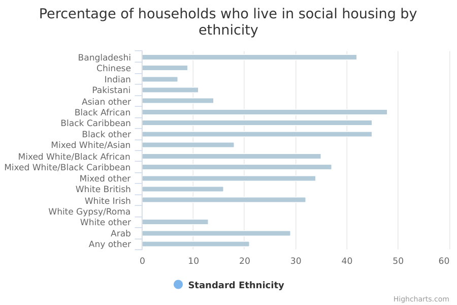
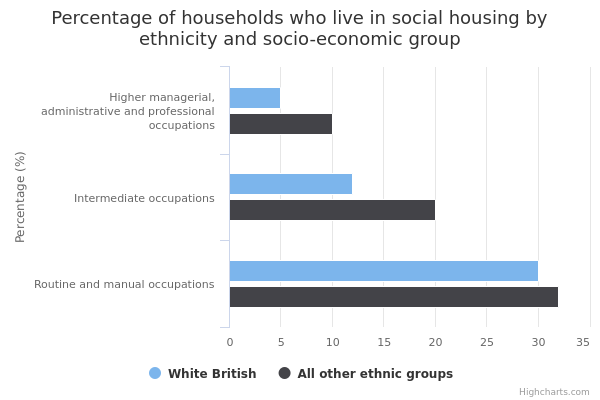
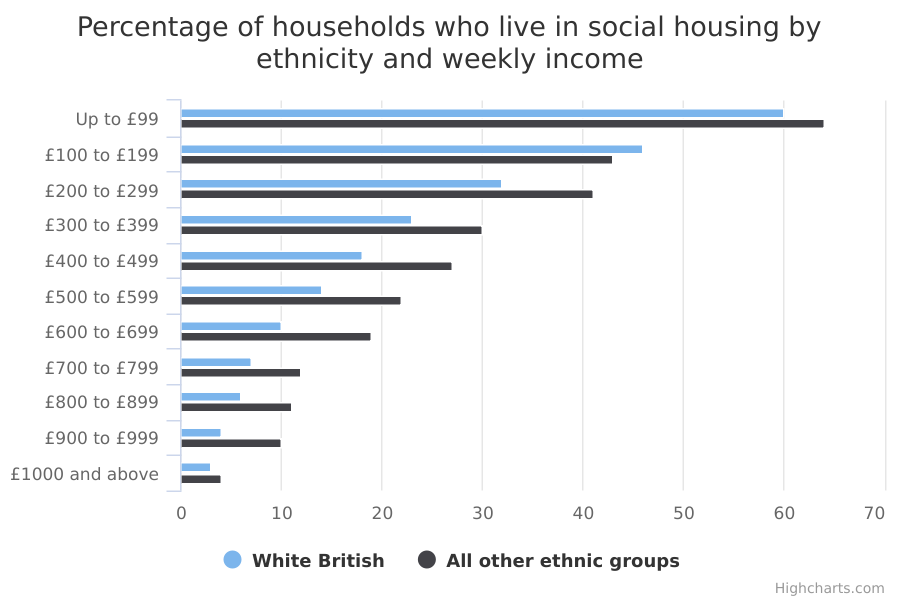
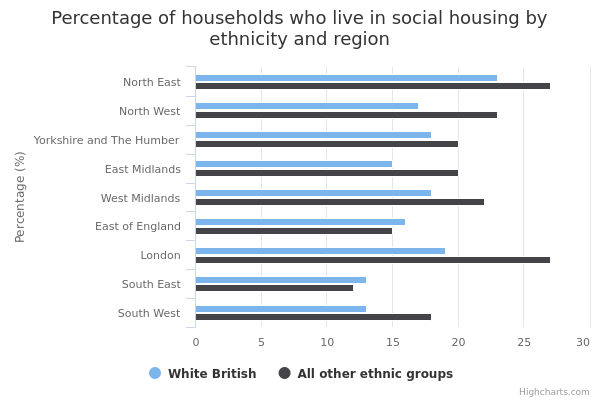

Renting from a local authority or housing association (‘social housing’)
The main facts and figures show that:
-
3.9 million of the estimated 22.5 million households in England in 2015/16 rented their home from a local authority or housing association – the equivalent of 17%
-
some ethnic minorities were more likely to rent from a local authority or housing association than White British households while others were less likely
-
when comparing White British households with all other ethnic groups - across most socio-economic groups, income bands and age groups - White British households were less likely to rent social housing
-
ethnic minority households in London and the North West of England were more likely to rent social housing than White British households
Things you need to know
Compared to White groups, people from an ethnic minority background tend to be younger, resident in England for a shorter time and located in urban areas. They are also likely to live in larger households. This may explain differences in levels of homeownership.
To ensure that there is a large enough number of ethnic minority households to produce reliable findings, the data is drawn from the English Housing Survey (EHS) 2014/15 and 2015/16.
Information about households available from the EHS Headline and Annual Reports is normally based on a 12-month period (April to March) of the survey, so some of the statistics cited here may not match those in the Headline and Annual Reports.
The commentary has focused on findings based on subgroups of at least 30 households to ensure that we report reliable findings.
The number of Gypsies or Irish travellers interviewed is very small. To avoid disclosing personal information about individuals in that group, information about this group is not presented in some of the tables or charts.
The English Housing Survey (EHS) is a ‘sample survey’: it collects information from a random sample of the population to make generalisations (reach 'findings’) about the total population.
For example, EHS findings might include the percentage of households who get help from their family to buy their own home.
The commentary for this data only includes reliable, or ‘statistically significant’, findings.
Findings are statistically significant when we can be confident that they can be repeated, and are reflective of the total population rather than just the survey sample.
Specifically, the statistical tests used mean we can be confident that if we carried out the same survey on different random samples of the population, 19 times out of 20 we would get similar findings.
What the data measures
This data measures how likely people in different ethnic groups are to rent their home from a local authority or housing association (that is, rent ‘social housing’).
Social housing includes property rented from local authorities (including Arms’ Length Management Organisations and housing action trusts), housing associations, local housing companies, co-operatives and charitable trusts.
The figures are drawn from the 2014/15 and 2015/16 English Housing Survey (EHS). The survey involves face-to-face interviews with about 13,300 randomly selected households every year.
These are used to make estimates for the 22 million households in England as a whole.
The EHS is a national survey of people's housing circumstances and the condition and energy efficiency of homes in England.
The information relates to households. A household is one person or a group of people (not necessarily related) who have the accommodation as their only or main residence. If it is a group, they must share cooking facilities and also share a living room, sitting room or dining area.
The EHS has ethnicity information on the household reference person as well as all other members of the household. The household reference person is the person in whose name the dwelling is owned or rented or who is otherwise responsible for the accommodation.
Some households contain people from different ethnic backgrounds; in these circumstances, we have used the ethnic background of the household reference person to define the ethnic background of the household.
Nearly all the household reference persons – more than 99.8% interviewed – provided information on their ethnicity.
At the geographical level, the data is shown for the nine regions of England: North East, North West, Yorkshire & Humberside, East Midlands, West Midlands, East of England, London, South East and the South West.
Why these ethnic categories were chosen
For comparisons made at national level, this data uses the standardised ethnic groups based on the 2011 census.
White:
- English/Welsh/Scottish/Northern Irish/British
- Irish
- Gypsy, Traveller or Irish Traveller
- Any other White background
Mixed/Multiple ethnic groups:
- White and Black Caribbean
- White and Black African
- White and Asian
- Any other Mixed/Multiple ethnic background
Asian/Asian British:
- Indian
- Pakistani
- Bangladeshi
- Chinese
- Any other Asian background
Black/African/Caribbean/Black British:
- African
- Caribbean
- Any other Black/African/Caribbean background
Other ethnic group:
- Arab
- Any other ethnic group
For data analysed both by ethnicity and by income, socio-economic group, region and age, the following binary category has been used:
- White British and Other – White British people compared with all other groups (including White ethnic minorities and all other ethnic minorities)
This is because the number of people that were surveyed to generate estimates for the population as a whole becomes too small to be reliable when broken down both by ethnicity (in either detailed or broad categories) and by another factor like socio-economic group or income.
Data is therefore grouped to a size where estimates become reliable. In this case, information broken down by ethnicity and another factor compares White British with Other.
Renting from a local authority or housing association by ethnicity

Percentage and number of households who live in social housing by ethnicity
| Asian | |||
|---|---|---|---|
| Bangladeshi | 42 | 41,000 | 98,000 |
| Chinese | 9 | 11,000 | 129,000 |
| Indian | 7 | 37,000 | 504,000 |
| Pakistani | 11 | 35,000 | 333,000 |
| Asian other | 14 | 30,000 | 218,000 |
| Black | |||
| Black African | 48 | 176,000 | 368,000 |
| Black Caribbean | 45 | 129,000 | 289,000 |
| Black other | 45 | 17,000 | 38,000 |
| Mixed | |||
| Mixed White/Asian | 18 | 12,000 | 66,000 |
| Mixed White/Black African | 35 | 28,000 | 80,000 |
| Mixed White/Black Caribbean | 37 | 37,000 | 99,000 |
| Mixed other | 34 | 11,000 | 32,000 |
| White | |||
| White British | 16 | 3,080,000 | 18,808,000 |
| White Irish | 32 | 58,000 | 184,000 |
| White Gypsy/Roma | withheld because a small sample size makes it unreliable | withheld because a small sample size makes it unreliable | withheld because a small sample size makes it unreliable |
| White other | 13 | 143,000 | 1,078,000 |
| Other | |||
| Arab | 29 | 18,000 | 63,000 |
| Any other | 21 | 48,000 | 227,000 |
Summary
This data shows that:
-
16% of White British households rented their home from a local authority or housing association
-
the ethnic groups with the highest rates of renting from a local authority or housing association were African, Caribbean, Other Black and Bangladeshi households with rates of 48%, 45%, 45% and 42% respectively
-
the ethnic groups with the lowest rates of renting from a local authority or housing association were Pakistani, Chinese and Indian households with rates of 11%, 9% and 7% respectively
-
although the survey estimates show Other Asian households are less likely to rent social housing compared to White British households in this sample, these are not reliable enough to draw any conclusions about differences between these groups in the total population
-
similarly, although the survey estimates show White and Asian, those from Any other ethnic group and Arab households are more likely to rent social housing than White British households these are not reliable enough to draw conclusions about differences between these groups in the total population
Download image and data
Renting from a local authority or housing association by ethnicity and socio-economic group

Percentage and number of households who live in social housing by ethnicity and socio-economic group
| White British | All other ethnic groups | |||||
| Higher managerial, administrative and professional occupations | 5 | 373,673 | 7,635,539 | 10 | 138,604 | 1,400,849 |
|---|---|---|---|---|---|---|
| Intermediate occupations | 12 | 480,178 | 3,857,408 | 20 | 137,349 | 702,682 |
| Routine and manual occupations | 30 | 1,886,724 | 6,260,530 | 32 | 425,116 | 1,311,313 |
Summary
This data shows that:
-
White British householders working in higher managerial, administrative and professional occupations and intermediate occupations were less likely to rent their home from a local authority or housing association than all other ethnic groups
-
although the survey estimates show differences in the rates of renting social housing for those householders in routine and manual occupations in this sample, these are not reliable enough to draw any conclusions about differences between White British and ethnic minority households in the total population
Download image and data
Renting from a local authority or housing association by ethnicity and income

Percentage and number of households who live in social housing by ethnicity and weekly income
| White British | All other ethnic groups | |||||
| Up to £99 | 60 | 110,302 | 183,039 | 64 | 41,296 | 64,744 |
|---|---|---|---|---|---|---|
| £100 to £199 | 46 | 740,427 | 1,623,813 | 43 | 136,667 | 319,019 |
| £200 to £299 | 32 | 728,441 | 2,290,104 | 41 | 156,866 | 382,066 |
| £300 to £399 | 23 | 484,822 | 2,121,559 | 30 | 144,997 | 490,875 |
| £400 to £499 | 18 | 320,623 | 1,793,046 | 27 | 108,329 | 399,204 |
| £500 to £599 | 14 | 234,904 | 1,641,076 | 22 | 76,241 | 343,358 |
| £600 to £699 | 10 | 159,142 | 1,521,753 | 19 | 60,762 | 312,920 |
| £700 to £799 | 7 | 86,599 | 1,234,900 | 12 | 30,937 | 266,681 |
| £800 to £899 | 6 | 64,484 | 1,099,098 | 11 | 22,388 | 209,729 |
| £900 to £999 | 4 | 35,884 | 875,735 | 10 | 18,509 | 188,360 |
| £1000 and above | 3 | 114,161 | 4,424,028 | 4 | 34,930 | 831,408 |
Summary
This data shows that:
-
White British households with incomes of between £200 and £699 as well as £900 to £999 a week were less likely to rent their home from a local authority or housing association than any other ethnic group
-
although the survey estimates show differences in the rates of renting social housing for those householders earning less than £199 a week, between £700 to £899, and more than £1000 a week, these are not reliable enough to draw any conclusions about differences between White British and ethnic minority households in the total population
Download image and data
Renting from a local authority or housing association by ethnicity and area

Percentage and number of households who live in social housing by ethnicity and region
| White British | All other ethnic groups | |||||
| North East | 23 | 246,001 | 1,082,079 | 27 | 16,381 | 60,660 |
|---|---|---|---|---|---|---|
| North West | 17 | 476,902 | 2,726,087 | 23 | 76,662 | 332,876 |
| Yorkshire and The Humber | 18 | 356,670 | 1,993,215 | 20 | 49,254 | 251,038 |
| East Midlands | 15 | 262,599 | 1,716,315 | 20 | 43,814 | 223,700 |
| West Midlands | 18 | 353,855 | 1,973,387 | 22 | 78,641 | 355,356 |
| East of England | 16 | 340,564 | 2,179,257 | 15 | 49,018 | 316,271 |
| London | 19 | 332,566 | 1,721,643 | 27 | 433,213 | 1,615,633 |
| South East | 13 | 425,686 | 3,196,339 | 12 | 56,845 | 492,775 |
| South West | 13 | 284,944 | 2,220,374 | 18 | 28,093 | 160,054 |
Summary
This data shows that:
-
in London and the North West, White British households were less likely to rent social housing than all other ethnic groups
-
although the survey estimates show differences in the rates of renting social housing in all other regions of the country in this sample, these are not reliable enough to draw any conclusions about differences between White British and ethnic minority households in the total population
Download image and data
Renting from a local authority or housing association by ethnicity and age

Percentage and number of households who live in social housing by ethnicity and age
| White British | All other ethnic groups | |||||
| 16 - 24 yrs old | 25 | 136,808 | 547,604 | 18 | 36,730 | 209,064 |
|---|---|---|---|---|---|---|
| 25 - 34 yrs old | 17 | 402,620 | 2,400,150 | 17 | 147,555 | 888,814 |
| 35 - 44 yrs old | 16 | 456,426 | 2,909,500 | 21 | 224,017 | 1,043,931 |
| 45 - 54 yrs old | 16 | 602,611 | 3,746,787 | 27 | 213,987 | 795,069 |
| 55 - 64 yrs old | 15 | 497,746 | 3,240,797 | 24 | 101,873 | 426,164 |
| 65 yrs old or over | 16 | 983,576 | 5,963,859 | 24 | 107,760 | 445,322 |
Summary
-
in nearly all age groups, White British households were less likely to rent from a local authority or housing association than all other ethnic groups
-
although the survey estimates show differences in the rates of renting social housing for those aged under 35 years old in this sample, these are not reliable enough to draw any conclusions about the differences between White British and ethnic minority households in the total population
Download image and data
Methodology and type of data
Type of data
Survey
Purpose of data source
The English Housing Survey is a continuous national survey commissioned by the Department for Communities and Local Government (DCLG). It collects information about people’s housing circumstances and the condition and energy efficiency of housing in England.
Methodology
Face-to-face interviews with a random sample of about 13,300 households a year.
The dwellings of about 6,000 of the interviewed households are randomly selected to take part in the physical survey element carried out by a qualified surveyor.
In addition, a random sample of around 200 of the dwellings identified by the interviewer as vacant are also included in the physical survey element.
Weights are applied to the sample to produce estimates for the 22 million households in England as a whole.
Rounding
Estimates in the charts and tables are given to the nearest whole number but more detailed estimates to 1dp are available in the downloads.
Quality and methodology informationData source details
Source
Department
Department for Communities and Local Government
Type of statistic
National statistic
Publication frequency
Annually
Suppression rules
Estimates based on less than 30 households have been suppressed to ensure that we report reliable findings.
The analysis has been done only by binary classification where broken down by NS-SEC, income, region or age. This prevents small numbers' appearing in the table and avoids the potential for identification of individuals.
Disclosure control
The data are deposited in the UK Data Archive, after a wide range of disclosure control has been applied. Strictly disclosure controlled data in the form of derived variables are available under the End-User Licence (e.g. ethnicity is given as white/ethnic minority).
Data sets with some more details are made available under Special Licence after the users has applied to the EHS Team for access.
Potentially disclosive data, including low-level geography variables (postcode and LSOA) are available only through the UKDA Secure Access which requires users to undergo special training, including on disclosure control, before access is given.
Download the data
social-housing.csv
This file contains the following: ethnicity, year, geography, age group, NS-SEC (socio-economic group), income, region, value, denominator, numerator and sample size
View this page as JSON